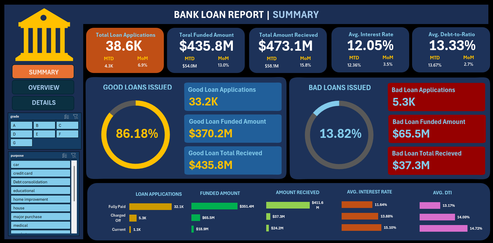
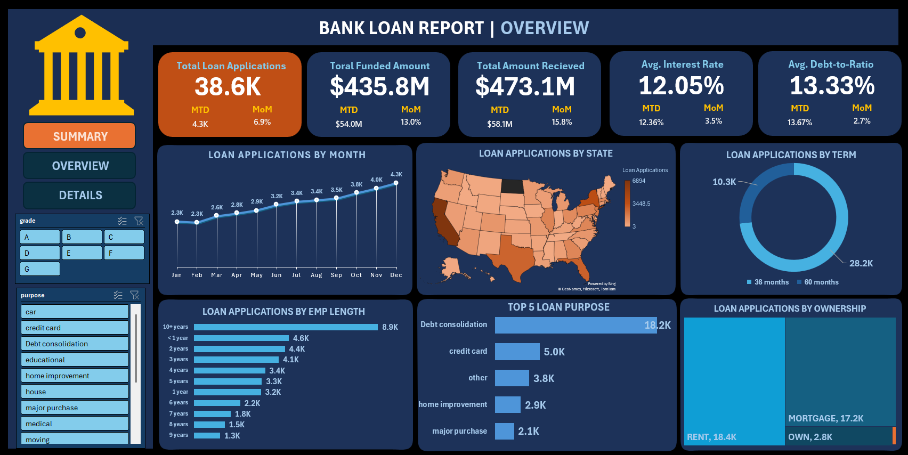

Bank Loan Analysis & Dashboard
Interactive dashboards that evaluate portfolio health (good vs. bad loans), monitor lending KPIs over time, and reveal trends by region, borrower profile, and loan type to support data‑driven lending decisions.


Objective
Build a comprehensive Bank Loan Reporting System to monitor loan performance, evaluate portfolio quality, and guide lending strategy using clear KPIs, segmentation, and trend analysis.
Key Features & Insights
Summary Dashboard
- KPIs: Total Loan Applications, Total Funded Amount, Total Amount Received, Average Interest Rate, Average DTI.
- Comparisons: Month‑to‑Date (MTD) and Month‑over‑Month (MoM) deltas.
- Quality split: Good Loans (Fully Paid, Current) vs Bad Loans (Charged Off) with their own KPIs.
Overview Dashboard
- Monthly Trends (line): applications, funded, received over time.
- Regional Analysis (filled map): activity by state.
- Loan Term (donut): distribution by 36/60 months.
- Employment Length (bar): metrics by borrower job stability.
- Loan Purpose (bar): debt consolidation, credit card, etc.
- Home Ownership (treemap): own, rent, mortgage.
Data & Model
- Borrower: state, annual income, employment length/title, home ownership, verification status.
- Loan: amount, term, interest rate, purpose, grade/sub‑grade, issue date.
- Performance: loan status, last/next payment dates, DTI, amounts funded/received.
Impact
- Faster, data‑driven lending decisions via live KPIs.
- Clear risk monitoring using Good vs Bad loan cohorts.
- Targeted regional & demographic strategies from trends and segments.
Potential Improvements
- Predictive default risk (classification model with borrower attributes).
- Automated refresh (scheduled queries to live data).
- Drill‑through to borrower records and payment history.
- Enhanced risk scoring (integrate bureau/alternative data).